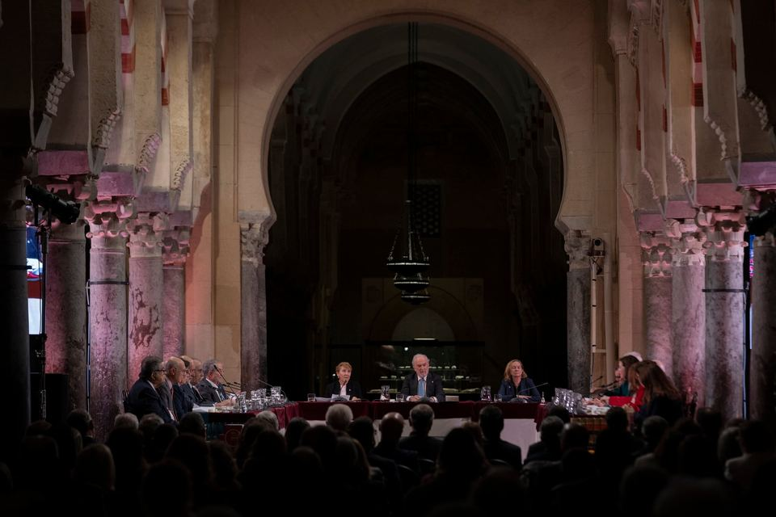

La RAE reúne en la Mezquita-Catedral de Córdoba a 21 académicos en un pleno extraordinario dedicado a Góngora

La institución celebra una espectacular sesión pública dentro de los actos del cuarto centenario de la muerte del poeta cordobés, en 2027
“Celebramos hoy a pensadores y literatos que han cultivado las letras en español en esta ciudad”. La voz del director de la RAE, Santiago Muñoz Machado, resonó esta tarde sobre la tenue iluminación de la Mezquita-Catedral de Córdoba, y sobre los inmortales arcos de franjas rojas y blancas. La Real Academia Española celebró este jueves un pleno extraordinario en la Mezquita-Catedral de Córdoba, una reunión excepcional de su máximo órgano de gobierno que trasladó por unas horas la actividad de la institución fuera de su sede madrileña. El encuentro reunió a 21 académicos y rindió homenaje a Luis de Góngora (1561-1627) y a las grandes figuras de las letras y el pensamiento cordobés de la…